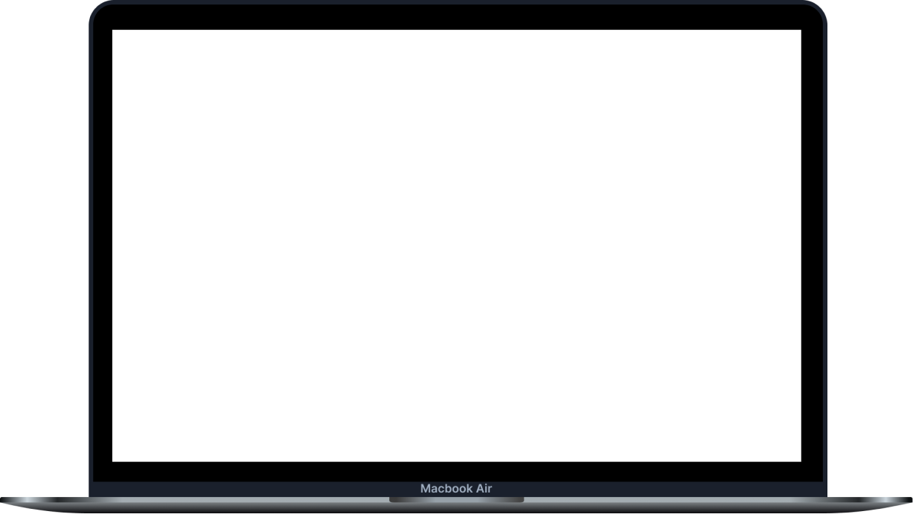

Video Pitch 1
- Foco nos resultados: "Descubra como resolvemos os principais desafios do seu help desk e entregamos resultados reais."
- Destacando a inovação: "Apresentamos a solução inovadora que transformará o seu atendimento ao cliente."
Video Pitch 2
- Quer saber como a IA pode transformar seu help desk? Assista ao nosso vídeo e conheça o MVP.